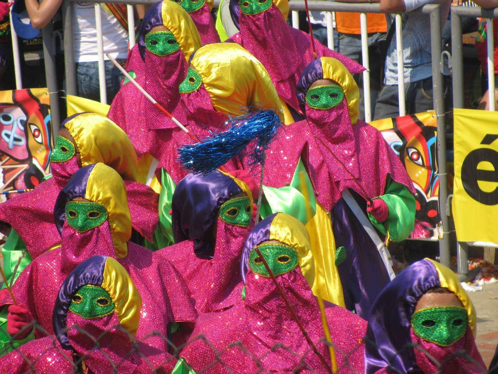

Festivals · Culture
Carnaval de Barranquilla 2027
- Dates
- –
- Location
- Barranquilla, Colombia
- Format
- In-person
- Category
- Culture
- Industry
- Carnival / Culture
- Organiser
- Carnaval de Barranquilla S.A.S. with the Alcaldía de Barranquilla
- Expected attendance
- 6,000,000
- Official website
- https://carnavaldebarranquilla.org/carnaval-de-barranquilla-2027/
About
UNESCO Masterpiece of the Oral and Intangible Heritage of Humanity. Pre-carnival events start from mid-January. Colombia dates are local (Colombia time, UTC-5 all year, no daylight saving).
Topics: carnival, folklore, parades, music, dance.
Official carnival site (22 May 2026) quotes the mayor: 2026 drew 'más de 6 millones de espectadores' (cumulative crowds; 500M+ digital reach not counted).